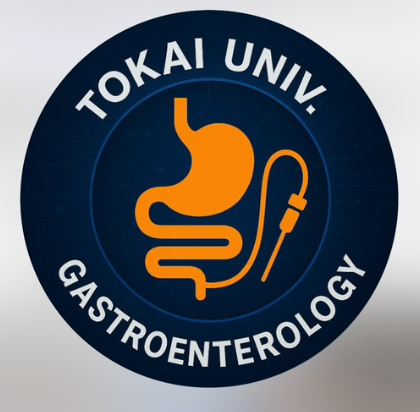

各項目の有無をクリックし、ページ下部で判定をまとめて確認します。自己免疫性膵炎臨床診断基準2018、ICDC、病理組織学的4所見の確認に対応しています。
このツールは診断補助・教育用です。膵癌・胆管癌など悪性疾患の除外、ステロイド診断の適否、最終診断は専門医の臨床判断で行ってください。
びまん型か限局型を選択してください。
①-④のうち3つ以上でIVa、2つでIVbです。
4所見のうち3件以上あるかを自動判定します。